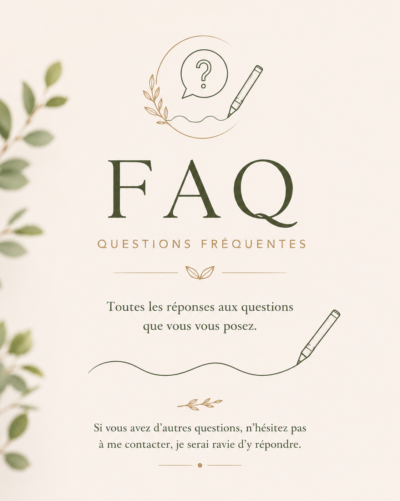

FAQ — Questions fréquentes

La graphothérapie s'adresse aux enfants dès 6 ou 7 ans, lorsque l'écriture est suffisamment installée pour être évaluée. Elle accompagne aussi les adolescents confrontés à des difficultés persistantes. Les adultes peuvent en bénéficier pour gagner en confort et retrouver une écriture plus fluide au quotidien.
Plusieurs signes peuvent vous alerter : une écriture difficile à lire, très lente ou fatigante, douloureuse (main, poignet, bras), source de stress ou de découragement, pénalisante à l'école, dans les études ou au travail. Un bilan permet d'évaluer les difficultés et de déterminer si une rééducation est adaptée.
Les séances sont pratiques, progressives et adaptées à chaque personne. Nous travaillons la posture et l'installation, la tenue du stylo, les gestes graphiques, la fluidité, la lisibilité et la confiance dans l'acte d'écrire. Les exercices sont variés, ludiques pour les plus jeunes.
Oui. La graphothérapie aide les adultes à améliorer la fluidité, la lisibilité et le confort de leur écriture — par exemple pour reprendre des études, préparer un concours, ou retrouver une écriture fonctionnelle après un accident de la vie. Des progrès sont généralement observés avec une pratique régulière.
Chaque accompagnement est personnalisé : la fréquence s'adapte à l'âge, aux difficultés et aux objectifs. En général, une séance toutes les deux semaines favorise une progression durable.
Pour les plus jeunes, quelques exercices à la maison peuvent être utiles et efficaces. Pour les plus grands, bien appliquer les conseils donnés en séance tout au long des travaux écrits suffit.
Le besoin varie selon la nature des difficultés, l'âge, la motivation et l'assiduité de la personne. La moyenne se situe autour de 12 à 15 séances. Il est ensuite intéressant de revenir une fois par trimestre ou semestre pour vérifier l'évolution.
Aucune prise en charge n'est prévue par l'Assurance Maladie, comme pour les psychologues ou ergothérapeutes. Quelques mutuelles indemnisent sur la base d'un forfait annuel de 3 à 6 séances. La MDPH ne rembourse pas directement, mais dans certaines situations de handicap reconnu, une participation peut être envisagée via la PCH — renseignez-vous auprès de la MDPH de votre département.
Une rééducation réussie permet à son terme de bien écrire avec n'importe quel stylo. Pour les plus jeunes, certains stylos sont plus adaptés pour éviter une rechute : je vous conseille le cas échéant.